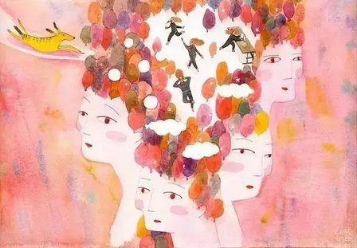

互惠动态
|
|
父母才是孩子永不退休的班主任！
曾经在网上看到这么一句话：“一想到为人父母不需要经过考试，就觉得真是太可怕了。”确实是这样，只要有结婚证，就可以生孩子，只要有能力生孩子，就以为有能力教育孩子了。可是事实却是，并不是所有父母都是合格的，相对于孩子，其实父母更需要教育。
生了孩子，你就不能 “ 退货 ”
因工作关系，每年都有那么几个月需要与土豪们交流，为了缓解工作的教育孩子是人类最重要而又最困难的学问，它比任何工作都难。
无论你面对的是什么样的孩子，你都没办法反悔或者“退货”。农民种庄稼，光靠爱，不行，只有懂种庄稼之道才有好收成；教育孩子，仅有爱，不够，只有懂孩子的成长规律才有好未来。
最需要教育的，不是孩子，而是父母。
别错过孩子发展的关键期
发展的关键期是指人类的某种行为、技能和知识的掌握，在某个时期发展最快，最容易受影响。
如果在发展关键期对孩子施以正确的教育，他学习起来既快又好，往往能够收到事半功倍的效果；一旦错过关键期，学习就需要花费几倍的努力才能弥补，甚至将永远无法弥补。
1、你了解多少孩子发展的关键期？
★学习咀嚼关键期（6个月）
★秩序规范关键期（2.5—6岁）儿童行为习惯形成的关键期，这一时期形成的性格、行为、习惯往往到长大也不会改变。“三岁看大，七岁看老。”
★语言发展关键期（3—6岁）
★想像力发展关键期（2—8岁）
★文化敏感期（6—10岁）这个时期的许多孩子，非常好奇，爱动脑筋，问题特别多。应该满足孩子的求知欲望。
★黄金阅读期（8—14岁）如果错过了这一时期的科学阅读指导和大量阅读，将会给孩子的成长造成难以弥补的缺憾。
★独立关键期（12—15岁）这一段抓不好，孩子将永远长不大。
2、重新认识母性之爱和父性之爱
母性之爱和父性之爱，孩子都需要，只是每一阶段分工不同、主次不同。母性之爱：德行礼仪、品格气质。母亲在孩子的婴幼、少儿阶段影响巨大。父性之爱：方向性引领和理性作为。伟大的父亲，一定是孩子的引路人、思想的奠基人。
规律：孩子成长需要的母性之爱呈递减趋势，父性之爱呈递增趋势。
婴幼儿阶段：母性之爱80%，父性之爱20%；小学低年级：母性之爱70%，父性之爱30%；小学中年级：母性之爱60%，父性之爱40%；小学高年级：母性之爱50%，父性之爱50%；初中阶段：母性之爱40%，父性之爱60%。
中小学衔接阶段是孩子成长的浪漫阶段的结束和精确阶段的开始；是由母爱为主向父爱为主的过渡期。这一时期，母性之爱应该适当减少，父性之爱应该适当增加。

给家长的“10条建议"
1、（说给父亲）下班的路应该是回家的路。孩子读初中之后，更需要父亲的关怀。作为父亲，必须意识到自己肩上的教育责任，一定要记住：下班的路应该是回家的路。与父母一起吃饭的孩子更优秀。
据研究机构调查：与父母一起进晚餐的初中生，能获得较好的营养，较高的学业成绩，很少出现抽烟、喝酒、吸毒、打架、提早性行为等。不要在孩子吃饭和睡觉时进行教育；不要把和孩子交谈，都变成对孩子的教育。
2、孩子“生病”，父母一定要“吃药”，父母改变，孩子改变。孩子的问题大多是父母教育不当造成的。孩子“生病”，父母一定要“吃药”。好父母就是一所好学校。父母是孩子的最好的“范本”。身教重于言教。做父母的，要与孩子一起成长。
3、教育孩子的前提是了解孩子。美国著名教育家杜威说：“儿童不是尚未长成的大人，儿童期有其自身的内在价值”。孩子进入初中之后，极易将自己封闭起来，做父母的，一定要理解孩子，找到与孩子沟通的语言密码，但要注意惜“言”如金。
成熟的父母，应该学习儿童教育学、心理学，多看一些家教书刊，了解孩子不同成长阶段的特点和规律，经常与孩子沟通，明白孩子在想什么，在做什么。
4、一定要管孩子，关键是怎么管。教育的最基本的目的是培养“正常的人”。“一只手”、“一只眼”和“一根筋”教育均不可取。换一种思路教育孩子。努力丰富自己的教育方法。
5、做一个懂爱会爱的家长。不少父母爱得糊涂，爱得错位，有时又爱得过分。不要培养“超级婴儿”。爱是一门艺术。爱需要表达也需要行动。有时一个拥抱胜过千言万语。爱要适度，不要让你的爱泛滥成灾。溺爱的结果是伤害。
6、不能当众教育孩子。
7、不要完全把孩子交给长辈或保姆。
8、在孩子面前多夸老师。学会用赏识的眼光看老师。家长和老师是同一战壕的战友，一定要与老师结成同盟军。如果家长在孩子面前总是絮絮叨叨诉说老师的“不是”，批评老师，甚至与老师争吵，只会增加孩子对老师的排斥心理。久而久之，受害的是孩子，吃亏的是家长
关于互惠，您了解得够多么？
请外国学生来家庭照顾孩子，辅导孩子外语？
只了解这些是不够的！
获取更多信息请参考以下方式：
感谢您对我们的关注